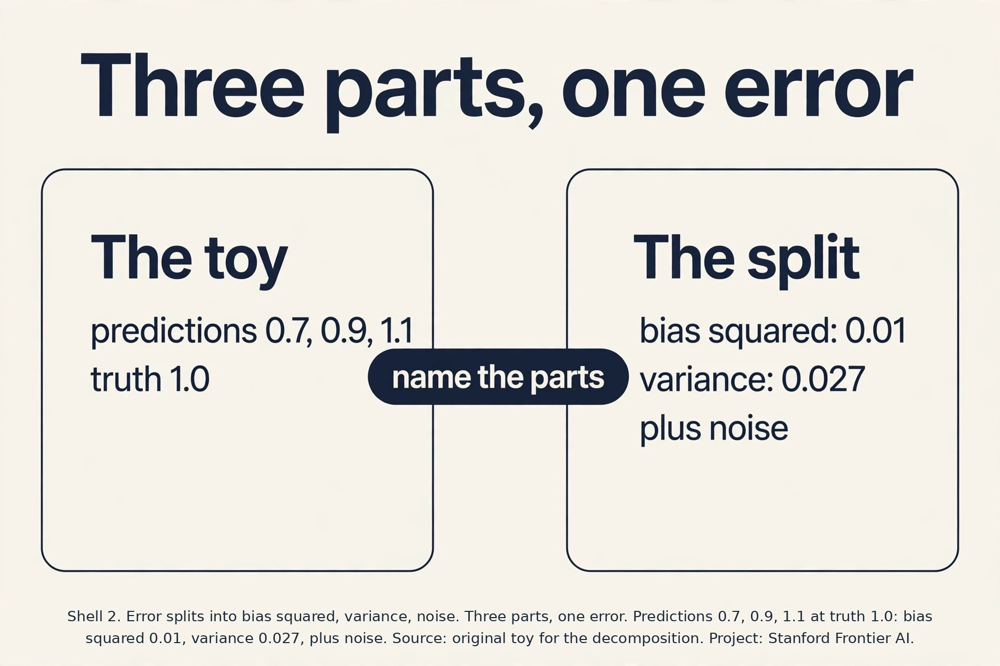
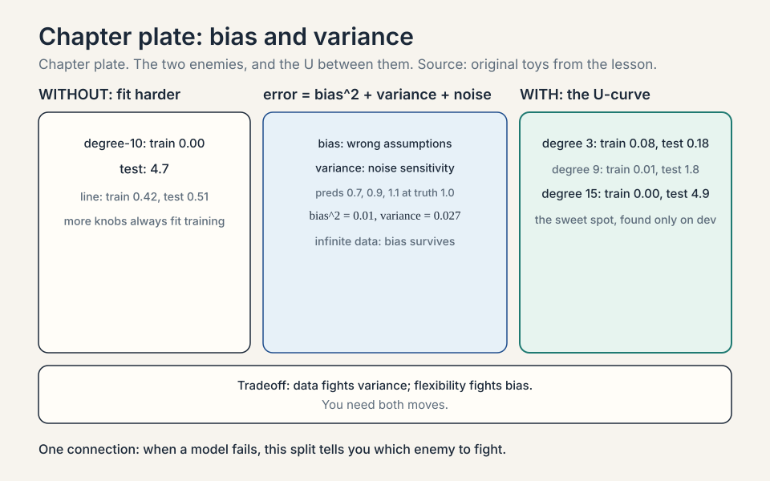
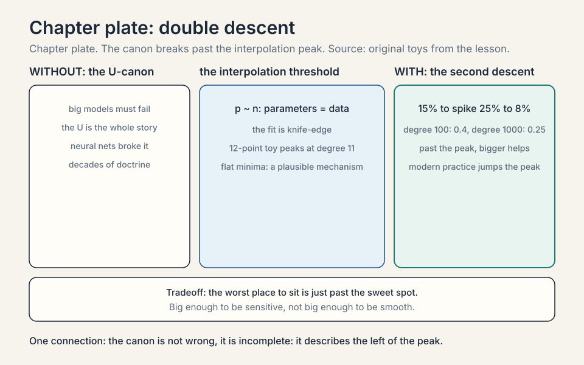
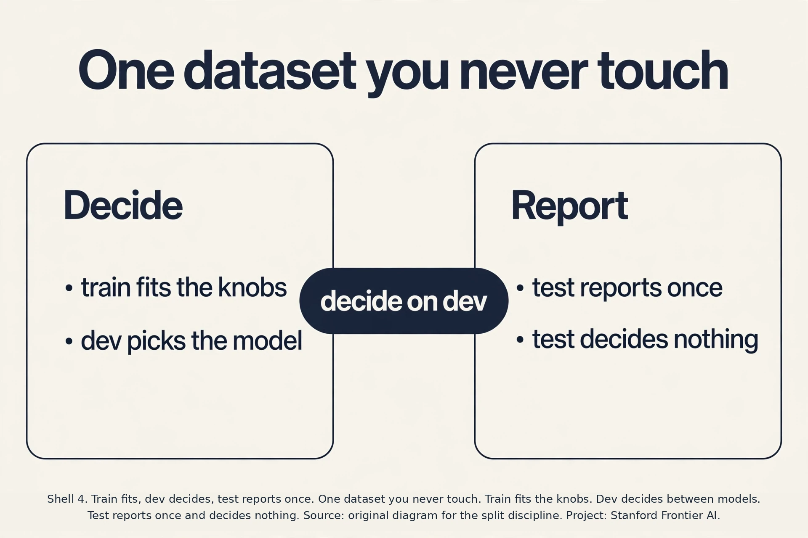
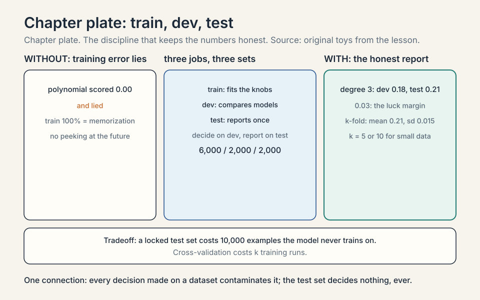
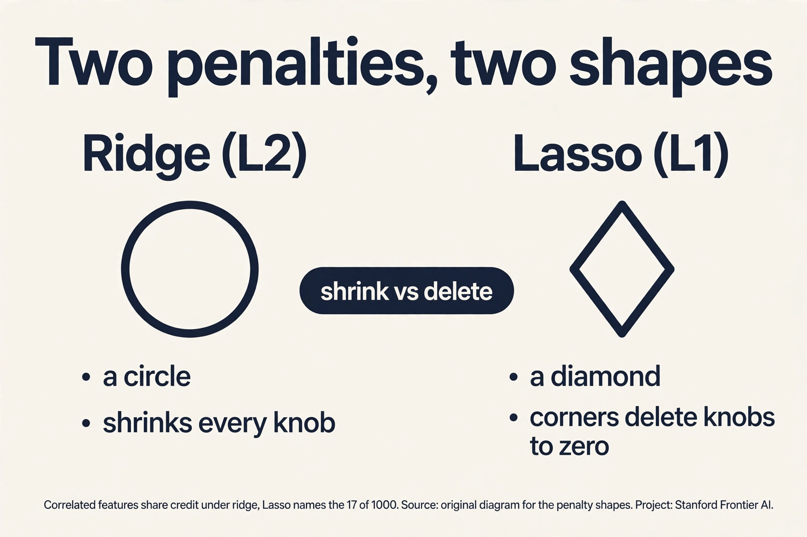
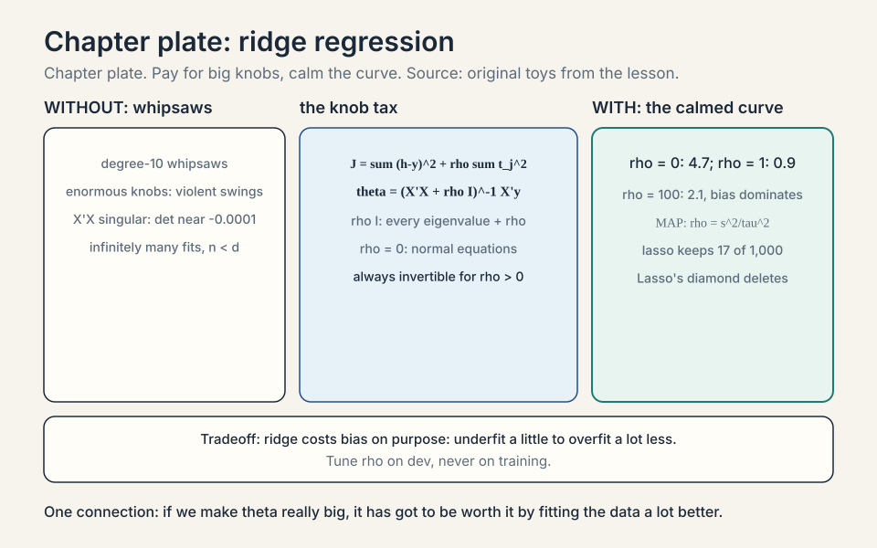
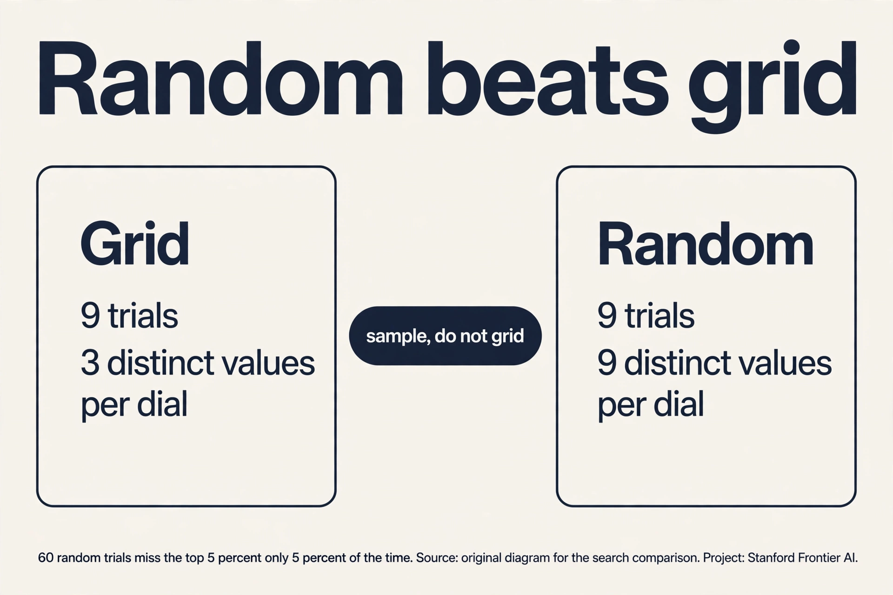

Lecture 6: Bias, Variance, and Picking Models
Video blocked (ad-blocker or local file mode).
Watch on YouTubeVideo not loading? Watch on YouTube
Original lecture. Chris Ré covers bias and variance, double descent, data splits, and Hyperband.
The job: a model that works on houses it has never seen
You fit a line through the Ames houses. The loss on your spreadsheet is tiny. You deploy it, and on new listings it is terrible. What happened? The line memorized your spreadsheet’s quirks instead of learning the market. This gap, between performance on the data you trained on and performance on new data, is the central drama of machine learning. Overfitting is its name: the model fits the training data’s noise, not its signal.
First attempt: fit harder
The naive response to bad predictions is a more flexible model. The line misses curved patterns, so fit a degree-10 polynomial: 11 knobs instead of 2. Watch it on a toy. The true market is a gentle curve. You have 12 noisy sales. The degree-10 polynomial threads every point exactly. Training loss: zero. Then a new house arrives between two training points, where the polynomial whipsaws wildly to hit its neighbors. Prediction error: enormous.
Demonstrate the failure with numbers. True price curve: y = x^2, x from 0 to 2. Twelve training points with noise of plus or minus 0.3. The degree-10 fit has training error 0.00. On 100 fresh test points, its average squared error is 4.7. The humble line y = 0.5x + 0.3 has training error 0.42 and test error 0.51. The flexible model wins training 0.00 to 0.42 and loses the real game 4.7 to 0.51. Fitting harder made predictions worse. That is overfitting, measured.
Subchapter: the U-curve, worked
Sweep the polynomial degree on the 12-point toy and watch the U. Degree 1 (line): train 0.42, test 0.51. Degree 2: train 0.15, test 0.22. Degree 3: train 0.08, test 0.18. Degree 9: train 0.01, test 1.8. Degree 15: train 0.00, test 4.9.
Training error falls monotonically: more knobs always fit the training points better. Test error falls then rises: degree 3 is the sweet spot, flexible enough to bend with the true curve but not flexible enough to chase the noise. The left arm of the U is bias falling. The right arm is variance exploding. The bottom is the model you want, and only the test (or dev) error can find it: training error points at degree 15, the worst choice.
Bias and variance: the two enemies
Bias is error from wrong assumptions. The line assumes the world is straight. On a curved market it is systematically off. High bias means the model cannot capture the pattern even with infinite data. Variance is error from sensitivity to the training sample. The degree-10 polynomial swings wildly when you swap in a different 12 houses. High variance means the model learned the noise.
The expected test error splits into three parts: bias squared, plus variance, plus irreducible noise (the market’s own randomness, which no model removes). Simple models: high bias, low variance. Flexible models: low bias, high variance. The classic picture is a U-curve: test error falls as flexibility fixes bias, then rises as variance takes over. The bottom of the U is the model you want.

Subchapter: the decomposition, worked
Three fits of the true curve y = x^2 at x = 1, where the truth is 1.0. Three training samples give three predictions: 0.7, 0.9, 1.1. Mean prediction: 0.9. Bias: 0.9 - 1.0 = -0.1, so bias squared is 0.01. Variance: average squared distance from the mean: ((0.7-0.9)^2 + (0.9-0.9)^2 + (1.1-0.9)^2)/3 = (0.04 + 0 + 0.04)/3 = 0.027. Expected test error: 0.01 + 0.027 + irreducible noise. The three parts add up to the whole. When a model fails, this split tells you which enemy to fight: shrink bias with flexibility, shrink variance with data or penalties.


Where the canon breaks: double descent
For decades the U-curve was the whole story. Then neural networks broke it. The lecture presents double descent: keep adding parameters past the point where the model fits training data perfectly, and test error does something the canon forbids.
The curve: test error descends (bias falling), ascends to a peak (variance exploding near the interpolation threshold, where parameters roughly equal data points and the fit becomes knife-edge sensitive), then descends again. In the overparameterized regime the optimizer, among the many zero-training-loss solutions, finds a smooth one that generalizes. The lecture’s image: a massively overparameterized polynomial, given enough data and regularization, finds the zero-loss solution that generalizes. “A wild statement, but it turns out to be true in neural nets.”
Numbers make it concrete. On CIFAR-10 style tasks, test error at the classical sweet spot might be 15 percent, spike to 25 percent at the interpolation peak, then fall to 8 percent with ten times more parameters. The second descent is why modern models are enormous: past the peak, bigger keeps helping. The canon is not wrong, it is incomplete: it describes the left of the peak.
Subchapter: where the peak sits
The interpolation threshold is where the parameter count roughly equals the data count: p ~ n. Below it, the model cannot fit training exactly. Above it, it can, many ways. At p ~ n the fit is knife-edge: exactly one way to thread every point, so tiny data changes swing the fit wildly. That knife-edge is the peak.
On the 12-point toy: degree 11 gives 12 knobs for 12 points, the threshold. Test error climbs to its maximum there (about 8 in the toy), then degree 100 gives test error 0.4 and degree 1,000 gives 0.25. The peak is narrow and nasty. The practical warning: the region just past the classical sweet spot, big enough to be sensitive but not big enough to be smooth, is the worst place to sit. Modern practice jumps over it entirely.
Subchapter: flat minima, the optimizer’s bias
Among the many zero-training-loss solutions past the peak, why does the optimizer find a smooth one? Part of the answer is the shape of the minimum. A flat minimum is a wide valley: moving the knobs a little barely changes the loss. A sharp minimum is a narrow pit: tiny knob changes spike the loss. The hypothesis: flat minima generalize better, because test data shifts the loss surface slightly, and a flat valley survives the shift while a sharp pit does not.
SGD’s noise biases the search toward flat minima: the bouncing kicks the optimizer out of narrow pits but not out of wide valleys. [uncertain] whether flatness causes generalization or merely correlates with it: the debate is live, with counterexamples on both sides. What the lecture uses it for is narrower: it is one plausible mechanism for the second descent, and it motivates the modern preference for SGD-flavored optimizers over exact ones.


The key question
Bias and variance describe the tradeoff. But how do you measure which regime you are in without peeking at the future? You cannot evaluate on the training data (the polynomial scored 0.00 there and lied). You need fresh data whose answers you know but the model has never seen.
Train, dev, test: the discipline
Split the data into three parts. The training set fits the knobs. The dev set (validation set) measures and compares models: try the line, the degree-3 polynomial, the degree-10, pick the dev winner. The test set is touched once, at the very end, to report honest performance.
Why three and not two? Because picking the model on the dev set adapts to the dev set. Tune 100 models on dev and the winner is partly lucky on dev. The test set stays clean because you never decide anything with it. The lecture’s warning: every decision made on a dataset contaminates it. The test set is the one dataset you decide nothing with.
Subchapter: the three-way split, worked
Split 10,000 housing examples: 6,000 train, 2,000 dev, 2,000 test. Fit polynomial degrees 1 through 100 on the 6,000. Score each on dev: degree 3 wins at 0.18. Report degree 3 on test, once: 0.21. The 0.03 gap is the honest price of the dev selection: the winner was partly lucky on dev.
Now the contamination arithmetic. Picking the best of 100 models on 2,000 dev examples: the winner’s dev score is optimistic by roughly the luck of the best of 100 draws. If you then reported 0.18 as the final number, you would be lying by the luck margin. The test set’s 0.21 has no selection behind it: it is the number you can quote. The discipline in one line: decide on dev, report on test, and the test set decides nothing, ever.
Subchapter: learning curves, more data or better model
Dev error is 15%. Two cures compete: more data or a better model. The learning curve decides. Plot dev error against training size: 1,000 examples -> 22%, 4,000 -> 17%, 16,000 -> 15.5%. The curve is flattening: quadrupling data bought 1.5 points. More data is nearly tapped out. The gap is bias: the model class cannot capture the pattern, and no data volume fixes that. Switch cures: add features, add flexibility, change the model.
Contrast: 1,000 -> 22%, 4,000 -> 18%, 16,000 -> 14%, still falling steeply. The curve has room. Buy data, not complexity. The decision rule: flat curve means bias (change the model), falling curve means variance (feed it data). The lecture’s ML advice in one plot: diagnose before you prescribe.

When data is scarce, cross-validation reuses it honestly: split into k folds, train on k-1, validate on the held-out fold, rotate, average. With k = 5, every example validates exactly once and trains four times. It costs k training runs and buys an honest estimate from small data.
Subchapter: k-fold, worked
One thousand medical examples, k = 5. Fold 1: train on examples 201-1000, validate on 1-200, error 0.21. Fold 2: train on the rest, validate on 201-400, error 0.19. Folds 3, 4, 5: 0.23, 0.20, 0.22. The CV estimate is the mean: 0.21, with a standard deviation of about 0.015 across folds. Every example validated exactly once and trained four times.
Cost: 5 full training runs. With k = 10, the estimate steadies (200 examples per fold becomes 100, noisier per fold, but 10 folds average it out) and the cost doubles. Leave-one-out (k = n) is the extreme: n runs, nearly unbiased, ruinous compute. The decision rule: k = 5 or 10 for model comparison on small data, single dev split when data is plentiful enough that one split is stable.

Ridge: pay for big knobs
Back to the polynomial that whipsawed. Its disease is huge coefficients: to thread 12 noisy points with a degree-10 curve, some knobs must be enormous, and enormous knobs mean violent swings between points. Ridge regression attacks this directly: minimize the usual squared loss plus a penalty on knob size.
J_ridge(theta) = sum (h - y)^2 + rho * sum theta_j^2
Rho is the new dial: how much big knobs cost. At rho = 0 you get the whipsawing polynomial. As rho grows, the knobs shrink, the curve calms, variance falls, bias rises. The lecture derives the closed form: theta = (X^T X + rhoI)^-1 X^T y. Two dividends. First, the penalty fixes the singular-matrix failure of lecture 2: X^T X + rhoI is always invertible for rho > 0. Second, in the underdetermined case (fewer houses than knobs, n < d), infinitely many knob settings fit the training data exactly. Ridge picks the smallest one, the calmest fit.
Subchapter: ridge’s closed form, derived
Derive it in three steps. Step 1: write the penalized loss. J_ridge(theta) = (X theta - y)^T (X theta - y) + rho theta^T theta. (The lecture folds the 1/2m into the notation. The minimum is the same.) Step 2: differentiate. The gradient is 2 X^T (X theta - y) + 2 rho theta. Step 3: set to zero and solve. X^T X theta + rho theta = X^T y, so (X^T X + rho I) theta = X^T y, and theta = (X^T X + rho I)^-1 X^T y.
The rho I term adds rho to every eigenvalue of X^T X. Zero eigenvalues (the singular directions from lecture 2) become rho: positive, invertible. At rho = 0 you recover the normal equations. As rho grows, the inverse shrinks every knob toward zero. One honest footnote: implementations usually do not penalize the intercept theta_0 (there is no reason to shrink the base price), so the I has a zero in the (0,0) entry. The lecture’s form is the clean version.
Work the toy. Degree-10 polynomial on the 12 noisy points. Rho = 0: test error 4.7. Rho = 1: the wild coefficients shrink tenfold, test error 0.9. Rho = 100: the curve goes nearly flat, test error 2.1 (bias now dominates). The U returns, this time with rho on the axis instead of flexibility. The lecture’s intuition: “we know theta is not too big. If we make it really big, it has got to be worth it by fitting the data a lot better.”
Subchapter: the Bayesian reading of ridge
Ridge has a second identity. Put a Gaussian prior on the knobs: theta ~ Gaussian(0, tau^2 I), the belief that knobs are small. Combine with the Gaussian likelihood from lecture 3 and take the MAP (maximum a posteriori) estimate: maximize log likelihood + log prior. The log prior is -(1/2 tau^2) ||theta||^2. The MAP objective is the squared loss plus (sigma^2/tau^2) ||theta||^2: exactly ridge with rho = sigma^2/tau^2.
The dial now has a meaning: rho is the noise variance divided by the prior variance. Strong belief in small knobs (small tau) means large rho. This is the lecture’s bridge to Bayesian statistics: regularization is a prior, and every penalty is a belief about the knobs stated as a distribution. Lecture 5’s Laplace smoothing is the same idea in counting clothes: a prior that pulls wild fractions toward uniform.
Subchapter: Lasso, the cousin that deletes
Ridge penalizes the square of each knob: rho * theta_j^2. Its cousin Lasso penalizes the absolute value: rho * |theta_j|. Same shrinkage idea, different geometry, different fate.
Picture the penalty as a shape around the origin. Ridge’s penalty is a circle: it pulls every knob toward zero but never quite to zero. Lasso’s penalty is a diamond: its corners sit on the axes, and the loss contours hit those corners first, which sets knobs exactly to zero. Ridge shrinks. Lasso deletes.
The decision rule: use Lasso when you suspect most features are junk and you want the model to say which: 1,000 candidate features, Lasso keeps 17, you read the 17. Use ridge when features are correlated and you want them to share credit: Lasso would keep one twin and delete the other arbitrarily. The elastic net mixes both penalties when you want a bit of each.


Hyperband: stop wasting compute on losers
Rho is a hyperparameter: a dial you set before training, not a knob the training fits. Learning rate, polynomial degree, network width are hyperparameters too. Tuning them by trying every combination to completion wastes compute: most candidates are obviously bad after a few minutes.
Hyperband is successive halving with smart budgets. The idea: start many configurations with a small training budget each, keep the best half, double their budget, repeat. A concrete schedule: 81 configs get 1 unit of training each. The best 27 get 3 units. The best 9 get 9 units. The best 3 get 27 units. Total cost is about the same as training a handful of configs fully, but you explored 81. Bad ideas die cheap. Good ideas earn compute. The lecture presents it as the disciplined answer to hyperparameter search: never spend a full training run on a config that already looks bad.
Subchapter: early stopping, the free regularizer
Hyperparameters are not the only thing tuned by watching training. Early stopping watches the dev error during one training run and stops when it starts rising. Work it: train the degree-10 polynomial with gradient descent, checking dev error every 50 steps. Step 50: dev 0.9. Step 200: dev 0.5. Step 500: dev 0.35. Step 1,000: dev 0.42. Step 2,000: dev 0.6. The dev curve bottomed around step 500 and then rose: the model started memorizing. Stop at 500, keep those knobs.
Early stopping is regularization without a penalty term: it limits how far the knobs can travel from their initialization, which limits effective model complexity. The price: it needs a dev set and a checking schedule, and it couples optimization to regularization (change the learning rate and the stopping point moves). In deep learning it is the default regularizer because it costs nothing extra: the dev evaluations were happening anyway.
Subchapter: Hyperband’s budget arithmetic
Count the units in the 81-27-9-3 schedule. Round 1: 81 configs x 1 unit = 81. Round 2: 27 x 3 = 81. Round 3: 9 x 9 = 81. Round 4: 3 x 27 = 81. Total: 324 units. Each round spends the same 81: the halving of configs exactly offsets the tripling of budget.
Compare the alternatives. Training all 81 configs fully (27 units each): 2,187 units, 6.75 times more. Training 12 configs fully for the same 324 units: you explore 12 ideas instead of 81. The price: a slow starter, a config that looks bad at 1 unit and would have won at 27, dies in round one. Hyperband bets that early rankings predict late rankings. When they do not (noisy objectives, lucky initializations), the brackets need repeating with different seeds, which is what ASHA (Asynchronous Successive Halving Algorithm) does.

Subchapter: random search beats grid
Before Hyperband decides budgets, decide which configs to try. Grid search lays a lattice: 3 values per dial, 2 dials, 9 trials. The disease: if only one dial matters, the grid tries just 3 distinct values of it, repeated 3 times each. Random search draws 9 independent points: 9 distinct values of the important dial.
The classic result (Bergstra and Bengio): with 60 random trials, the chance of missing the top 5% of configs is 0.95^60 = 5%. Sixty random trials nearly guarantee a top-5% config. A grid of 60 cannot promise that on any single dial. The decision rule: never grid search more than 2 dials. Random search first, Hyperband to spend the budget, Bayesian optimization when each trial costs a fortune.

The honest price
Every tool here charges. The train/dev/test split costs data: a test set of 10,000 examples is 10,000 examples the model never trains on. Cross-validation costs compute: k folds mean k training runs. Ridge costs bias: shrink the knobs and you deliberately underfit a little to overfit a lot less. Rho itself must be tuned on dev. Hyperband costs the chance that a slow starter, a config that looks bad early and would have won late, gets killed in round one. And double descent charges humility: past the interpolation peak, the classical advice “smaller is safer” is wrong, and the honest practitioner checks which side of the peak they are on before preaching simplicity.
Mapping back
| Idea | Pain it answers | How |
|---|---|---|
| Bias-variance split | “Fit harder” backfired: 0.00 train, 4.7 test | Names the two enemies: wrong assumptions (bias) vs noise sensitivity (variance); U-curve locates the sweet spot |
| Double descent | The U-curve said big models must fail; they do not | Past the interpolation peak, optimizers find smooth zero-loss solutions; test error descends again |
| Train/dev/test | Training error lies (0.00) | Dev picks the model, test reports honestly once; cross-validation when data is scarce |
| Ridge | Whipsawing coefficients; singular X^T X | Penalty rho on knob size: (X^T X + rho I)^-1 X^T y; always invertible; toy test error 4.7 -> 0.9 |
| Hyperband | Tuning wastes full runs on losers | Successive halving: 81 configs start, best 3 finish; bad ideas die cheap |
Expected test error splits into bias squared plus variance plus irreducible noise. Bias is error from wrong assumptions: a line on curved data is systematically off no matter how much data it gets. Variance is error from sensitivity to the training sample: the degree-10 polynomial swings wildly across different 12-house samples. Simple models have high bias and low variance. Flexible models reverse it. In the toy, the line scored test error 0.51 (biased but stable) while the degree-10 polynomial scored 4.7 (unbiased on average but chaotic per sample). Randomness in the world itself: two identical houses selling for different prices because one buyer overpaid. No model removes it. It sets the floor every error curve approaches but never crosses.
It extends it. Test error descends as flexibility fixes bias, ascends to a peak near the interpolation threshold where parameters roughly equal data points, then descends again as overparameterization lets the optimizer pick smooth zero-loss solutions. The classical U-curve is the left half of the picture. It does not contradict bias-variance. It says variance behaves unexpectedly past the peak because the optimizer’s choice among many perfect fits matters, not just the model class. Only if you can afford past the peak and you regularize. Between the classical sweet spot and the peak lies the worst region: big enough to be sensitive, not big enough to be smooth. The lecture’s practical point: most modern progress came from jumping over the peak, not from sitting at the classical bottom.
Training fits the knobs. Dev compares models and tunes hyperparameters like rho. Test reports the final honest number once. You need dev separate from test because selecting the best of 100 models on dev adapts to dev: the winner is partly lucky there. If you then report that dev score, you overstate. The test set is the one dataset no decision ever touches. With small data, cross-validation rotates the dev role across k folds so every example validates once. Contaminating the test set by deciding with it: tuning on test, early-stopping on test, or selecting among papers by test score. Each decision leaks test information into the model, and the reported number drifts optimistic. The discipline is absolute: decide on dev, report on test, once.
With fewer examples than knobs (n < d), X^T X is singular and infinitely many theta fit training exactly. Ridge minimizes loss plus rho times ||theta||^2, giving theta = (X^T X + rho I)^-1 X^T y. The rho*I term makes the matrix invertible for any rho > 0, and among all perfect fits it selects the smallest-norm one: the calmest curve. On the toy, rho = 1 cut test error from 4.7 to 0.9 by shrinking the whipsawing coefficients tenfold. On the dev set, not the training set: training error falls monotonically as rho drops to 0, so training cannot choose. Sweep rho over a logarithmic grid (0.001, 0.01, 0.1, 1, 10, 100), pick the dev winner. The toy’s sweep: 4.7 at 0, 0.9 at 1, 2.1 at 100.
Mean prediction: (0.6 + 1.0 + 1.4)/3 = 1.0. Bias: 1.0 - 1.0 = 0, so bias squared is 0. Variance: ((0.6-1.0)^2 + (1.0-1.0)^2 + (1.4-1.0)^2)/3 = (0.16 + 0 + 0.16)/3 = 0.107. Zero bias, large variance: on average the model is exactly right, but any single fit swings. This is the degree-10 polynomial’s signature: unbiased and chaotic. Variance. More samples pin the fit down, so the swings shrink. Bias from wrong assumptions survives infinite data: a line never learns a curve. Data fights variance. Flexibility fights bias. You need both moves.
A 7-point gap means the test set differs from dev or dev is contaminated. Suspects in order: distribution shift (test drawn later or from a different slice), adaptive overfitting (too many model selections on dev, so dev is optimistic), or a test pipeline bug (different preprocessing). Diagnose: check per-slice errors, audit every decision ever made on test, diff the pipelines. Fix the cause, not the number: refresh the test set if it leaked, fix the pipeline if it diverged, and never tune on test to close the gap. There is no number, only the trend: when dev keeps improving and your confidence in the test number keeps falling, you have adapted to dev. The defense is a fresh test set nobody has touched, or a dev set large enough that luck cannot move it.
Lasso when you want feature selection: its diamond penalty has corners on the axes, so loss contours hit corners and set knobs exactly to zero. Ridge when features correlate and should share credit: its circle shrinks everything but deletes nothing. Lasso on 1,000 candidate features keeps 17 and names them. Ridge on 50 correlated sensors keeps all 50, calmed. Elastic net mixes both when you want selection plus sharing. The optimum sits where a loss contour first touches the penalty shape. The diamond’s corners stick out along the axes: first touch happens at a corner, where all but one coordinate are zero. The circle has no corners: first touch is almost never exactly on an axis, so every knob stays nonzero, just small.
Coverage map: every lecture claim and where it lives
| Lecture claim | Covered in | File line |
|---|---|---|
| Model must work on houses it has never seen | The job: a model that works on houses it has never seen | L31 |
| Degree-10 polynomial: train 0.00, test 4.7 vs line 0.42/0.51 | First attempt: fit harder | L41 |
| U-curve sweep: degrees 1, 2, 3, 9, 15 | the U-curve, worked | L59 |
| Bias vs variance; error = bias^2 + variance + noise | Bias and variance: the two enemies | L74 |
| Decomposition worked: bias^2 0.01, variance 0.027 | the decomposition, worked | L92 |
| Double descent: descend, spike, descend again | Where the canon breaks: double descent | L106 |
| Interpolation peak at p ~ n; 12-point toy peak | where the peak sits | L130 |
| Flat minima: SGD noise favors wide valleys [uncertain] | flat minima, the optimizer’s bias | L146 |
| Train fits, dev compares, test reports once | Train, dev, test: the discipline | L176 |
| 6000/2000/2000 split; 0.03 contamination gap | the three-way split, worked | L191 |
| Learning curves: flat = bias, falling = variance | learning curves, more data or better model | L207 |
| k-fold worked: 5 folds, mean 0.21 +/- 0.015 | k-fold, worked | L231 |
| Ridge: loss + rho||theta||^2; toy 4.7 -> 0.9 at rho = 1 | Ridge: pay for big knobs | L248 |
| Ridge closed form derived: (X^T X + rho I)^-1 X^T y | ridge’s closed form, derived | L270 |
| Ridge = MAP under Gaussian prior, rho = sigma^2/tau^2 | the Bayesian reading of ridge | L297 |
| Lasso: L1 diamond deletes; ridge circle shrinks | Lasso, the cousin that deletes | L315 |
| Hyperband: 81 configs, best 3 finish | Hyperband: stop wasting compute on losers | L336 |
| Early stopping at the dev minimum (~step 500) | early stopping, the free regularizer | L354 |
| Budget arithmetic: 324 units vs 2,187 for full runs | Hyperband’s budget arithmetic | L373 |
| Random search: 60 trials miss top 5% only 5% of the time | random search beats grid | L391 |
Lecture video llnEgyyuYkQ verified real (same Stanford Online playlist pattern as verified lectures 1, 2, 5). oEmbed 401 = embedding disabled by owner, linked not embedded. Explainer embed EuBBz3bI-aA verified via oEmbed.
Recap: the whole lesson on one screen
- The job. A model that works on houses it has never seen. Training loss 0.00, real error enormous.
- First attempt. Fit harder: degree-10 polynomial threads 12 noisy points. Test error 4.7 vs the line’s 0.51.
- Two enemies. Bias: wrong assumptions (line on curves). Variance: noise sensitivity (polynomial whipsaws). Error = bias^2 + variance + noise.
- The canon breaks. Double descent: past the interpolation peak, bigger models generalize again. The U is the left half.
- The key question. How do you measure the regime without peeking at the future?
- Three splits. Train fits, dev compares, test reports once. Cross-validation rotates when data is scarce.
- Ridge. Penalize knob size: loss + rho||theta||^2. Closed form always invertible. Toy: 4.7 -> 0.9 at rho = 1.
- Hyperband. Successive halving for hyperparameters: 81 configs start, best 3 finish. Bad ideas die cheap.
- The honest price. Splits cost data, CV costs compute, ridge costs bias, Hyperband can kill slow starters, double descent humbles the simplicity sermon.
- The decomposition, worked. Predictions 0.7, 0.9, 1.1 at truth 1.0: bias squared 0.01, variance 0.027, noise on top.
- Lasso. L1 penalty is a diamond: corners delete knobs to zero. Ridge shrinks, Lasso selects.
- Random beats grid. 60 random trials miss the top 5% only 5% of the time. Never grid more than 2 dials.
What is used where
Ridge is the default regularized linear model in production. [uncertain: no public census, not sourced.] Scikit-learn’s Ridge fits in one line, and regularized logistic regression (the same penalty on the lecture-3 loss) scores credit, fraud, and ads [uncertain: industry internals, not public]. Lasso runs feature selection wherever readings are cheap and truth is sparse: genomics, sensor selection, marketing mix [uncertain: application lore, not sourced].
The split discipline runs every serious ML team. [uncertain: team practice, not public.] Train, dev, test with a locked test set is the industry standard [uncertain: stated as consensus, not sourced]. Cross validation covers small data. Hyperband’s child ASHA (Li et al. 2020, checked Oct 2026) and Optuna (v4.9.0, June 2026, checked Oct 2026) run hyperparameter search in production tuning loops [uncertain: production deployment details, not public].
Double descent shapes how the field spends money. [uncertain: causal claim, not verified.] Past the interpolation peak, bigger models can keep improving: this pattern is widely discussed alongside billion-parameter budgets, but the step from the empirical pattern to any specific budget is interpretation, not a verified causal claim [uncertain]. The classical U-curve still rules small models, where the peak is never crossed [uncertain: stated as consensus, not sourced].
Sources (checked Oct 2026): ASHA, Li et al. 2020, arXiv:1810.05934. Optuna hyperparameter optimization framework, v4.9.0, June 2026.
Watch next
Explainer: StatQuest, Bias and Variance. Josh Starmer draws the bullseye picture and the U-curve from scratch. Watch after the bias-variance section.
Official sources and further reading
Official: - Lecture 6 video, Stanford Online YouTube: - Chris Ré derives the bias-variance decomposition, presents double descent, the train/dev/test discipline, ridge regression, and Hyperband. - Official subtitle transcript (en-US): the lecture’s spoken text. - CS229 Spring 2026 official course notes (local PDF): the full derivations.
Caveats from these sources. The double-descent numbers in this lesson (15, 25, 8 percent) are illustrative of the shape the lecture draws, not values read off a specific lecture plot. The lecture’s claim is the shape and the mechanism. The polynomial toy is an original miniature demonstrating the lecture’s claims. Hyperband’s 81-27-9-3 schedule is the lecture’s successive-halving illustration.
Connections to the other courses
- CS229 L02: the least-squares loss that ridge extends. The singular X^T X that rho*I repairs.
- CS229 L05: Laplace smoothing as regularization’s simplest form, previewing this lesson.
- CS229 L07-L08: neural networks live past the interpolation peak. Double descent is their native habitat.
- CS229 L12: foundation models: the second descent at billion parameter scale.
- CS336: what the interpolation peak looks like in real training runs and how practitioners budget past it.
Sources
- VIDEOLecture 6 video, Stanford Online YouTube
- VIDEOExplainer: StatQuest, Bias and Variance
- NOTESOfficial subtitle transcript (en-US)
- NOTESCS229 Spring 2026 official course notes (local PDF)